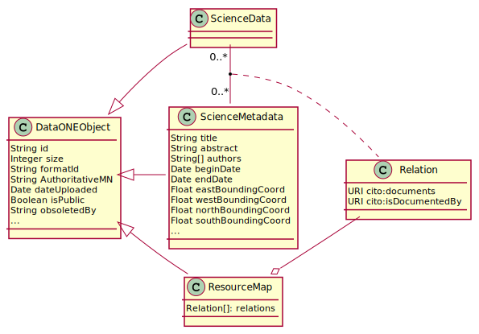

Data Packaging¶
Contents
Synopsis¶
A data package in DataONE is composed of at least one science metadata document describing at least one data object with the relationships between them documented in a resource map document.
Resource maps are RDF documents that conform to the Open Archives Initiative’s Object Reuse and Exchange (OAI-ORE) specification as described in detail below. Resource maps are generated by Member Nodes to define data packages, and have a formatId of:
http://www.openarchives.org/ore/terms/
Note this is a name space string. The actual ORE terms can be found in the ORE Vocabulary Document.
Figure 1. Overview class diagram for content model in DataONE. Class attributes refer to the equivalent SOLR index entry
Generating Resource Maps¶
While there are several formats discussed in the general discussion below,
DataONE currently only supports the RDF/XML serialization format, using the
formatId of http://www/openarchives.org/ore/terms. For more
information on OAI-ORE resource maps, see
http://www.openarchives.org/ore/1.0/primer, especially sections 3 and 4. For
more details on RDF/XML format, see
http://www.openarchives.org/ore/1.0/rdfxml.html
DataONE provides tools in both the Java and Python client libraries for building and serializing / deserializing resource maps, both based on the foresite-toolkit project (https://code.google.com/p/foresite-toolkit/). These are highly recommended for those who do not want to spend time on learning the OAI-ORE implementation model in detail in order to build and maintain a custom implementation.
The ORE data model itself is flexible and general purpose. In order to use it for our purposes, DataONE places a few additional constraints on the model. (See http://www.openarchives.org/ore/1.0/datamodel for details on the ORE data model).
all DataONE objects in the map MUST be expressed as a URI using DataONE’s resolving service, instead of reference to a specific replica on a member node. This is to separate the current physical location from the resource itself.
The aggregation resource URI SHOULD be expressed as a hash URI based on the resource map URI, as recommended by ORE (see: http://www.openarchives.org/ore/1.0/primer#remHashURIs, and http://www.openarchives.org/ore/1.0/http#Simple) This ensures that the aggregation can be referenced directly in other resource maps and still be resolved.
When referencing another DataONE data package, the URI of the package being referenced MUST resolve to a resource map. The URI can either be the resource map URI or the aggregation URI if it follows the hash URI format. Since some existing resource maps do not use aggregation URI’s that resolve to the resource map, it is necessary to check their format before deciding which to use.
each resource with a representation in DataONE MUST be described with an dcterms:identifier field containing the DataONE identifier.
when expressing an identifier in a URI, it must be URL encoded. When expressing in the dcterms:identifier field, it must not. (Of course any XML encoding would need to be applied as well, in the example below, there is none needed).
the resource map MUST assert a triple with the pre:isDescribedBy relationship between the resource map and the aggregation, following the recommendation that aggregations with multiple resource maps express this relationship. (see http://www.openarchives.org/ore/1.0/datamodel#ReM-to-aggr)
For example, the triple representing ‘scimeta_id1/foo documents scidata_id1’ would look like the following:
<rdf:Description rdf:about="https://cn.dataone.org/cn/v1/resolve/scimeta_id%2Ffoo">
<cito:documents rdf:resource="https://cn.dataone.org/cn/v1/resolve/scidata_id"/>
<dcterms:identifier>scimeta_id/foo</dcterms:identifier>
...
</rdf:Description>
and the aggregation resource would look like the following:
<rdf:Description rdf:about="https://cn.dataone.org/cn/v1/resolve/resource_map_id#aggregation">
<rdf:type rdf:resource="http://www.openarchives.org/ore/terms/Aggregation"/>
<ore:isDescribedBy rdf:resource="https://cn.dataone.org/cn/v1/resolve/resource_map_id"/>
<ore:aggregates rdf:resource="https://cn.dataone.org/cn/v1/resolve/scidata_id%2Ffoo"/>
<ore:aggregates rdf:resource="https://cn.dataone.org/cn/v1/resolve/scimeta_id"/>
...
</rdf:Description>
See the Examples section under Background Discussion below for a full example of a resource map.
Deviation from the ORE model¶
Because DataONE already contains resource maps whose aggregation URIs do not conform to the ORE specification that they can be resolved to a resource map, we cannot assert that the collection of resource maps adhere to the specification, and therefore will not will not require conformity in this aspect for resource maps submitted in the future.
As a result, users must be careful when referencing aggregations directly from other data packages, as not all of them will resolve to a resource map. Similarly, if the collection of resource maps is put together into a triple store, these non-resolving aggregation URIs cannot be guaranteed to be unique, the result of which is that mistaken relationships between unrelated items would occur.
Referencing other data packages¶
The main use case in DataONE for referencing other data packages in a resource map is that of nesting one inside another, which makes the ‘other’ data package itself something that is being aggregated. Especially in such cases, it is necessary that the URI used to represent the data package being aggregated can be resolved to its resource map. If the aggregation URI follows the has URI format, it will resolve to the resource map when following the URI. Otherwise, the URI of the resource map should be used. In both cases clients following the URI of the aggregated resource will get the resource map, as desired.
To check that the aggregation is in hash URI form, the following check can be used:
aggregation_X_uri startsWith (resourceMap_X_uri + "#")
Notes: Future infrastructure development will likely involve standing up a triple-store where all resource maps will be held. Any aggregation not in hash URI form cannot be relied upon to be unique, otherwise incorrect connections between unrelated objects are possible. Likely solutions for incorporation of existing non-hashURI aggregations include either renaming the aggregations upon import, or treating them as relative URIs that would be appended to the resourceMap URI.
Very large data packages¶
Current tools for building and parsing resource maps are not able to handle data packages that aggregate a very large number of objects. The DataPackage class in d1_libclient_java was used to attempt to create serialized resource maps of increasing size. Results are summarized below:
# of data objects |
time to build |
|---|---|
100 |
2 seconds |
1000 |
3 seconds |
3000 |
20 seconds |
10000 |
5 minutes |
30000 |
heap memory error after 45 minutes |
Describing filesystem hierarchies¶
In some cases, data packages have scripts that depend on particular filesystem structures. For example, an analyze.R script may depend on
a file data/yearly_temps_2010.csv. When packages are downloaded, the content is usually placed flat in the data/ directory and the
original path of the data is lost. This requires a researcher to manually reconstruct the folder structure of a bagged package.
To remedy this, the original location of files that are uploaded to DataONE can be preserved in the resource map with
prov:atLocation. This allows for reconstruction of the uploader’s package structure when exporting the package to a bag.
prov:atLocation has loose restrictions on the range of values that it can take. In DataONE’s case, the value
will be the path of the file relative to the package root.
For example, a file yearly_temps_2010.csv that resides in a folder on a researchers’ local machine at global_warming_metrics/data
is described in DataONE as:
<rdf:Description rdf:about="https://cn.dataone.org/cn/v1/resolve/pid">
<cito:isDocumentedBy rdf:resource="https://cn.dataone.org/cn/v2/resolve/"/>
<prov:atLocation>global_warming_metrics/data/yearly_temps_2010.csv</prov:atLocation>
...
</rdf:Description>
When exported to a bag archive, a directory global_warming_metrics/data is created under the root data/ directory. yearly_temps_2010.csv is placed
under the newly created directories, shown below:
<base directory>/
├── bagit.txt
├── bag-info.txt
├── manifest-<algorithm>.txt
├── oai-ore.txt
├── pid-mapping.txt
└── data
└── global_warming_metrics
└── data
└──yearly_temps_2010.csv
Resource map validation¶
Because DataONE indexing relies on the integrity of the resource maps it receives from the member nodes, each resource map will be validated against the set of constraints enumerated above. Resource maps that do not validate will fail synchronization, and the exception returned to the member node via the method MN_Read.syncrhonizationFailed.
Background Discussion¶
Overview¶
Data, in the context of DataONE, is a discrete unit of digital content that is expected to represent information obtained from some experiment or scientific study. The data are accompanied by science metadata, which is a separate unit of digital content that describes properties of the data. Each unit of science data or science metadata is accompanied by system metadata which describes the digital object (e.g. hash, time stamps, ownership, relationships).
In DataONE, data are treated as opaque sets of bytes and, along with their associated science metadata, are stored on Member Nodes (MN). A copy of the science metadata is held by the Coordinating Nodes (CN) and is parsed to extract attributes to assist the discovery process (i.e. users searching for content).
The opacity of data in DataONE is likely to change in the future to enable processing of the data with operations such as translation (e.g. for format migration), extraction (e.g. for rendering), and merging (e.g. to combine multiple instances of data that are expressed in different formats). Such operations rely upon a stable, accessible framework supporting reliable data access, and so are targeted after the initial requirements of DataONE are met and the core infrastructure is demonstrably robust.
In order to properly interpret, preserve, and utilize a data object, users and their software agents need access to the science metadata describing the data objects. A data package in DataONE provides the conceptual relationships among the various components of the package that describe which data objects are described by which science metadata documents, and the role in that description that they play. This model accommodates use of well-established existing metadata specifications such as EML, BDP, and ISO 19115 for documenting science metadata while recognizing that some of these do not readily incorporate mechanisms for consistent linkages to and inclusion of data objects. The data package concept also provides a consistent mechanism to define one or more serialized representations of a package that can be used to transport the components of a data package from one system to another.
Note
The DataONE System Metadata format currently includes descriptions of
some of the relationships that would be within scope of the definition of a
Data Package. Specifically, the System Metadata fields
SystemMetadata.obsoletes and SystemMetadata.obsoletedBy
describe the relationship between two objects where one replaces the other
from a scientific utility perspective (such as an error-corrected version of
an existing data file).
A data package will be represented in DataONE as a unique, additional class of object with its own unique identifier different from the identifiers of its components. Each of these data packages in DataONE will be represented by an OAI-ORE Resource Map that contains an Aggregation indicating relationships among the components of the package. The BagIt specification will be used to optionally provide these components as a single serialized object.
User stories¶
A user agent can download a description of a data package that provides the DataONE identifiers for all science metadata and data object components associated by the package
A user agent can download a serialized version of a data package that includes the science metadata and either the data bytes or references to the data bytes via DataONE identifiers directly in the serialized version of the package, and the system metadata for each of these objects.
The serialized form allows for the relationships between the various components to be properly maintained (e.g., which system metadata documents describe which data and science metadata objects)
Data packages can be versioned, such that individual components of a package can be replaced with new versions of those objects, new objects can be added, existing objects can be removed, and the whole package is versioned to differentiate it from earlier versions that contained different components.
A user agent can easily locate and inspect the science metadata associated with any data object
A user agent can easily locate and access the data objects associated with a science metadata object.
Data object formats should be well-described in science metadata, ideally to sufficient detail to allow software agents to parse and load the data and science metadata objects for additional processing, querying, and manipulation The data objects supported should minimally include:
Data Tables in CSV and other fixed and delimited text formats
NetCDF files
Raster images in various formats
Vector data in specific, community-accepted formats
A scientist can load all of the supported data objects from a data package found in a metadata search without directly knowing the identifiers for individual data objects.
A scientist can upload a new data object and associated science metadata in order to create a new data package, or to extend or create a new version of an existing data package
Package Content Associations Using OAI-ORE¶
The Open Archives Initiative’s Object Reuse and Exchange (OAI-ORE) [Lagoze-2008] “defines standards for the description and exchange of aggregations of Web resources”. OAI-ORE provides a mechanism for describing aggregations of distinct resources on the web by using their respective URIs to provide linkages in an RDF model. Each Aggregation is given its own distinct identifying URI, and ORE recommends the use of Cool URIs for the Semantic Web [Sauermann_Cyganiak-2008] as a mechanism to redirect from the Aggregation URI to a specific representation of the Aggregation, called a Resource Map, that can be represented in one of several different serializations such as RDF/XML, turtle, and Atom XML. Because relationships among resources are provided using RDF predicates, there is tremendous flexibility in the type of relationships that can be defined. ORE provides specific predicates that define relationship types between the Aggregation and a Resource Map (‘ore:describes’) and between the Aggregation and the Resources that it aggregates (‘ore:aggregates’). These concepts relate closely to similar concepts in DataONE.
- Beneficial features
Uses traditional web URIs as global identifiers
Compatible with the Linked Data philosophy
Supports arbitrary graphs of resources and aggregations
Issues and Resolution¶
- Issues
Does not provide a direct serialization of the Aggregation with the bytes inline
No data model for internal structure of enclosed resources
- Questions
Do URIs really have to be used, or can other resource identifiers such as DOIs be used?
Is there a more elegant way to link the Aggregation to a Resource Map than using the Cool URIs approach of redirection, especially when multiple physical copies of a Resource might exist at multiple physical locations?

Figure 2. General model for an OAI-ORE document.¶
Figure 2. Simple OAI-ORE representation of a data package with single science metadata (scimeta_id) and data(scidata_id) objects. There are two issues that need to be resolved for DataONE: a) how to assert that the aggregated object scidata_id is described by the metadata scimeta_id; and b) identifiers in OAI-ORE must be “protocol-based URIs”, which is more restrictive that DataONE requires.¶
Issue:
There are no predicates in ORE that can be used to indicate that the aggregated object scimeta_id describes the data indicated by scidata_id.
Options:
References between scimeta_id and scidata_id can be supported through non-ORE RDF elements. Reuse of existing terms should be emphasized.
For example, the DCMI Type Vocabulary defines a Dataset type that could be used to indicate that scidata_id refers to a data object by attaching the Dublin Core Terms Type predicate to the ORE aggregated object. Other possibilities from dcterms include references and isReferencedBy, requires and isRequiredBy, and relation.
In the document Mapping DataCite Metadata Scheme Terms (v2.0) to ontologies (DataCite2RDF), Shotton and Peroni provide a mapping between concepts described in the DataCite schema and existing ontologies with the general goal of expressing DataCite in RDF. The recommendation provided therein is to use terms drawn from the Citation Typing Ontology (CiTO) and others. The semantics of the CiTO terms documents and isDocumentedBy match nicely with the relationships between data and science metadata objects.
That a science metadata object actually describes one or more data objects can be inferred simply from its presence in a resource map aggregation. Detection of science metadata vs. data would be highly dependent on the object format for the object as expressed in it’s system metadata. This could be augmented by adding the format predicate from dcterms, with the object being the corresponding entry in the object format registry. However, this approach will not indicate which data objects are described by which metadata documents in the case where multiple metadata documents exist in a package.
Resolution:
Relationships between aggregated objects are indicated using terms drawn from the CiTO ontology, with cito:documents attached to an aggregated science metadata entry with the object of the triple being the URI of the relevant aggregated data object, and the converse indicated by cito:isDocumentedBy.
Issue:
Identifiers in OAI-ORE documents must technically be “protocol-based URIs” (http://www.openarchives.org/ore/1.0/datamodel#Aggregated_Resource), whereas identifiers in DataONE can be essentially any non-blank string.
Options:
Ignore the OAI-ORE requirement for URI identifiers. The identifiers will still work fine in the DataONE context, but would not be friendly for anyone accessing the ORE document without an appropriate DataONE client to resolve and retrieve the referenced objects.
Wrap the identifiers with a DataONE REST service URL that retrieves the object being referenced. So for example, if the DataONE identifier for the object was scimeta_id, then the URI used in the ORE document to reference the aggregated object would http://cn.dataone.org/object/scimeta_id. The
CN_read.get()operation would be modified to do a resolve, then a HTTP 302 redirect to the node that contains the content. This would also require that the client libraries are updated to support redirection.This option has the advantage of keeping the the ORE document functional for non-DataONE users but has the disadvantage of obfuscating the object identifiers. The later issue could be addressed by adding the dcterms identifier property to the aggregated object with the object being the actual DataONE identifier.
Resolution:
ORE URIs for aggregated objects are constructed by prepending the
CNCore.resolve() REST URL to the identifier (with the identifier
appropriately URI path encoded). CNRead.resolve() returns an
Types.ObjectLocationList as the response body, and a HTTP status of
302 with the first node listed in the ObjectLocationList being the target of
the redirect. The literal DataONE identifier for the aggregated object is
added to the ORE aggregate entry as a dcterms identifier property. DataONE
clients will utilize the dcterms:identifier entry to determine the DataONE
identifier of the object and utilize the normal resolve and get approach
for retrieving the object. The URLs contained in the ORE document will
continue to be handled as expected by other clients.
Examples¶
An RDF-XML rendering of the example from Figure 2 following the recommendations as generated using the Foresite python library is presented below. This OAI-ORE document is an example of a simple data package in DataONE, where a single science metadata document (identifier = scimeta_id) describes a single data object (identifier = scidata_id).
<?xml version="1.0" encoding="UTF-8"?>
<rdf:RDF
xmlns:cito="http://purl.org/spar/cito/"
xmlns:dc="http://purl.org/dc/elements/1.1/"
xmlns:dcterms="http://purl.org/dc/terms/"
xmlns:foaf="http://xmlns.com/foaf/0.1/"
xmlns:ore="http://www.openarchives.org/ore/terms/"
xmlns:rdf="http://www.w3.org/1999/02/22-rdf-syntax-ns#"
xmlns:rdfs1="http://www.w3.org/2001/01/rdf-schema#"
>
<rdf:Description rdf:about="http://foresite-toolkit.googlecode.com/#pythonAgent">
<foaf:mbox>foresite@googlegroups.com</foaf:mbox>
<foaf:name>Foresite Toolkit (Python)</foaf:name>
</rdf:Description>
<rdf:Description rdf:about="https://cn.dataone.org/cn/v1/resolve/scimeta_id">
<cito:documents rdf:resource="https://cn.dataone.org/cn/v1/resolve/scidata_id"/>
<dcterms:identifier>scimeta_id</dcterms:identifier>
<dcterms:description>A reference to a science metadata document using a DataONE identifier.</dcterms:description>
</rdf:Description>
<rdf:Description rdf:about="http://www.openarchives.org/ore/terms/ResourceMap">
<rdfs1:isDefinedBy rdf:resource="http://www.openarchives.org/ore/terms/"/>
<rdfs1:label>ResourceMap</rdfs1:label>
</rdf:Description>
<rdf:Description rdf:about="https://cn.dataone.org/cn/v1/resolve/resource_map_id">
<dcterms:identifier>resource_map_id</dcterms:identifier>
<dcterms:modified>2011-08-12T12:55:16Z</dcterms:modified>
<rdf:type rdf:resource="http://www.openarchives.org/ore/terms/ResourceMap"/>
<dc:format>application/rdf+xml</dc:format>
<ore:describes rdf:resource="https://cn.dataone.org/cn/v1/resolve/aggregation_id"/>
<dcterms:created>2011-08-12T12:55:16Z</dcterms:created>
<dcterms:creator rdf:resource="http://foresite-toolkit.googlecode.com/#pythonAgent"/>
</rdf:Description>
<rdf:Description rdf:about="http://www.openarchives.org/ore/terms/Aggregation">
<rdfs1:isDefinedBy rdf:resource="http://www.openarchives.org/ore/terms/"/>
<rdfs1:label>Aggregation</rdfs1:label>
</rdf:Description>
<rdf:Description rdf:about="https://cn.dataone.org/cn/v1/resolve/aggregation_id">
<rdf:type rdf:resource="http://www.openarchives.org/ore/terms/Aggregation"/>
<dcterms:title>Simple aggregation of science metadata and data</dcterms:title>
<ore:isDescribedBy rdf:resource="https://cn.dataone.org/cn/v1/resolve/resource_map_id"/>
<ore:aggregates rdf:resource="https://cn.dataone.org/cn/v1/resolve/scidata_id"/>
<ore:aggregates rdf:resource="https://cn.dataone.org/cn/v1/resolve/scimeta_id"/>
</rdf:Description>
<rdf:Description rdf:about="https://cn.dataone.org/cn/v1/resolve/scidata_id">
<cito:isDocumentedBy rdf:resource="https://cn.dataone.org/cn/v1/resolve/scimeta_id"/>
<dcterms:identifier>scidata_id</dcterms:identifier>
<dcterms:description>A reference to a science data object using a DataONE identifier</dcterms:description>
</rdf:Description>
</rdf:RDF>
The same in N3:
@prefix cito: <http://purl.org/spar/cito/> .
@prefix dc: <http://purl.org/dc/elements/1.1/> .
@prefix dcterms: <http://purl.org/dc/terms/> .
@prefix foaf: <http://xmlns.com/foaf/0.1/> .
@prefix ore: <http://www.openarchives.org/ore/terms/> .
@prefix rdfs1: <http://www.w3.org/2001/01/rdf-schema#> .
<https://cn.dataone.org/cn/v1/resolve/resource_map_id> a <http://www.openarchives.org/ore/terms/ResourceMap>;
dc:format "text/rdf+n3";
dcterms:created "2011-08-12T12:57:03Z";
dcterms:creator <http://foresite-toolkit.googlecode.com/#pythonAgent>;
dcterms:identifier "resource_map_id";
dcterms:modified "2011-08-12T12:57:03Z";
ore:describes <aggregation_id> .
<aggregation_id> a <http://www.openarchives.org/ore/terms/Aggregation>;
dcterms:title "Simple aggregation of science metadata and data";
ore:aggregates <https://cn.dataone.org/cn/v1/resolve/scidata_id>,
<https://cn.dataone.org/cn/v1/resolve/scimeta_id> .
<http://foresite-toolkit.googlecode.com/#pythonAgent> foaf:mbox "foresite@googlegroups.com";
foaf:name "Foresite Toolkit (Python)" .
<http://www.openarchives.org/ore/terms/Aggregation> rdfs1:isDefinedBy ore:;
rdfs1:label "Aggregation" .
<http://www.openarchives.org/ore/terms/ResourceMap> rdfs1:isDefinedBy ore:;
rdfs1:label "ResourceMap" .
<https://cn.dataone.org/object/scidata_id> dcterms:description "A reference to a science data object using a DataONE identifier";
dcterms:identifier "scidata_id";
cito:isDocumentedBy <https://cn.dataone.org/cn/v1/resolve/scimeta_id> .
<https://cn.dataone.org/object/scimeta_id> dcterms:description "A reference to a science metadata document using a DataONE identifier.";
dcterms:identifier "scimeta_id";
cito:documents <https://cn.dataone.org/cn/v1/resolve/scidata_id> .
Figure 3. Also rendered using the W3C RDF validator.¶
Package Serialization Using BagIt¶
The BagIt File Packaging Format [Boyko-2009] “is a hierarchical file packaging format designed to support disk-based or network-based storage and transfer of generalized digital content” (p.3). BagIt is defined in an Internet RFC that is currently being revised and is being considered in several library implementations. BagIt mainly provides a consistent mechanism for a serialized representation of a group of opaque objects using commonly available technological approaches (such as the zip archive format). BagIt includes a specification for including metadata about each of the objects, the bag itself, and fixity attributes so that any BagIt implementation can validate the components contained within a package. Unlike NetCDF and EML, BagIt does not attempt to provide a data model for the data it carries, instead asserting that consuming applications will know how to handle package contents based on the metadata included in the bag or via external knowledge.
Beneficial features
Simple and clear serialization, easy to parse, simple to recreate
Allows referencing external resources via URI, which are used to populate objects in the bag when it is processed
Issues
No data model for internal structure of enclosed resources
Hierarchical structure is not extensible to arbitrary graphs
No explicit definition of the identifier for each object
No clear delineation of the boundaries of objects within a hierarchy (e.g., for any given sub-object in the hierarchy, is it identified by the name of its parent directory or by its own filename, or by a locally-scoped version of both?
Questions
How is a URI or other identifier for data objects represented in the metadata, and how is it mapped to the data object to which it applies in the data hierarchy?
To be valid, must all of the fetch.txt URLs be downloaded and checksummed, and how is this handled for particularly large objects?
How are large objects that would normally exceed file system size limitations be handled?
The structure of a Data Package will follow the BagIt specification with the exception of the following additions and changes described here. The basic structure of a bag is:
<base directory>/
├── bagit.txt
├── bag-info.txt
├── manifest-<algorithm>.txt
├── oai-ore.txt
├── pid-mapping.txt
└── data
├── data-file-1.csv
├── data-file-2.csv
├── data-file-3.hdf
└── metadata-file-1.xml
└── analyses
└── script.R
The first addition is the presence of an OAI-ORE document oai-ore.txt within
the base directory that uses the object identifiers for DataONE objects and
describes the relationships among the objects in the package. The second
addition is the inclusion of pid-mapping.txt tag file showing the
correspondence between the persistent identifier for an object and its file
location in the bag, expressed relative to the base directory. The contents of
the file consist of one line for each data object in the bag, with each line of
the form:
PID FILEPATH
where PID is the persistent identifier for the object and FILEPATH is the path in the bag to the file containing the bytes of the file. For example, a typical pid-mapping.txt file might contain:
doi://10.xxxx/AA/TG43 data/data-file-1.csv
doi://10.xxxx/AA/7AW3 data/data-file-2.csv
doi://10.xxxx/AA/790I data/data-file-3.csv
doi://10.xxxx/AA/790I data/analyses/script.R
doi://10.xxxx/AA/76AV data/metadata-file-1.xml
The bag can be serialized as a single file for transport following the BagIt specifications. Any objects that are listed in the OAI-ORE file but are missing from the bag data directory (and therefore from the pid-mapping.txt) must be downloaded independently via the DataONE MNRead service.
Data Package Client Design¶
Although DataONE CNs and MNs will treat data as opaque, it is useful to design clients that understand the structure of Data Packages and have a common semantics for representing the components and their relationships. Client applications can then be built in various analytical environments and processing languages that allow simplified manipulation and processing of the associated sets of objects contained in a Data Package. For example, given an identifier for a data object, a client should be able to easily query CNs to find the package(s) with which it is associated, and be able to easily locate and access the other components of the package to gain an understanding of the structure and semantics of the data object and its associated package components. Although initially this feature would mainly be used for providing simplified access to these components, in future versions of DataONE we envision that the structure and semantics of each object will be clear based on science metadata and annotations, allowing advanced data querying, processing, and analysis on highly heterogeneous sources of data.
Classes, Fields, and Methods¶
- DataPackage
- Fields
identifier
D1Object[] objects
- Constructors
DataPackage(Identifier)
- Methods
add(DataObject): DataPackage
size(): int
contains(Identifier): boolean
get(Identifier): D1Object
remove(Identifier): void
identifiers(): List<Identifier>
getTitle(): String
getCreator(): String
getDisplayURL(): String
- D1Object
- Fields
SystemMetadata sysmeta (contains the Identifier for this object)
byte[] data
- Constructors
DataObject(Identifier)
- Methods
getIdentifier(): Identifier
getType(): ObjectFormat
getSystemMetadata(): SystemMetadata
setSystemMetadata(SystemMetadata): void
getData(): byte[]
setData(byte[]): void
getDescribeList(): List<Identifier>
getDescribeByList(): List<Identifier>
getObsoltedByList(): List<Identifier>
Algorithm for Constructing Data Packages¶
Constructing a data package involves taking a PID as passed to the client, and using that PID to query the system metadata to find all associated science metadata objects and other data objects. If the PID points at a scimeta object, it can be used to loop through all of the data objects it describes. If the PID points at a data object, trace back to its scimeta object first, then populate the data package, and then loop over all associated data objects. In pseudocode:
mn = cn.resolve(PID)
sysmeta = getSystemMetadata(PID)
- switch(sysmeta.getObjectFormat())
- case: EML or FGDC or other metadata format
scimeta = mn.get(PID)
construct DataPackage dp with sysmeta and scimeta
- for each objid in sysmeta.getDescribes()
mn = cn.resolve(objid)
objsysmeta = cn.getsysmetadata(objid)
objdata = mn.get(objid)
construct dobj = DataObject(objid, objsysmeta, objdata)
dp.addData(dobj)
- case: all other objects considered data objects
scimetaid = sysmeta.getDescribedBy()
mn = cn.resolve(scimetaid)
scisysmeta = cn.getsystemmetadata(scimetaid)
scimeta = mn.get(scimetaid)
construct DataPackage dp with scisysmeta and scimeta
objdata = mn.get(objid)
construct dobj = DataObject(ID, sysmeta, objdata)
follow step 1.3 above to get remainder of data objects in package
Additional Packaging Technologies¶
A number of additional existing technologies can and have been used for describing the linkages between science metadata, data, and system metadata. Here we review some packaging mechanisms that are presently in use and discuss how they are or might be used in existing systems to provide robust linkages among the components of a data package. These packaging mechanisms were considered but not selected, in favor of using BagIt and OAI-ORE.
Ecological Metadata Language (EML)¶
The Ecological Metadata Language (EML) [EML-2010] is a science metadata specification that specifically is modeled around the idea of a ‘data package’ that consists of science metadata that is encoded in the EML document and one or more data objects that can be either referenced in the the document via external references or can be included inline in the EML document directly. Both mechanisms are in widespread use in the ecological and environmental science communities that use EML, although the mechanism of external references is far more prevalent at this time (2010). EML documents are serialized as XML documents but can include data inline if properly encoded. Each EML document defines a top-level ‘packageId’ which contains the globally unique identifier for the data package. Each EML document also describes zero or more data entities that are drawn from a simple data model that includes data tables, spatial raster, spatial vector, and other generic entity data types. Each entity type in EML includes a distribution section that can be used to include the data inline or reference an external source for the data. External references to data are found in the ‘online/url’ field of the document, and can consist of URLs, URNs, and other URIs. Within the Knowledge Network for Biocomplexity, it is common to find references to web URLs and to indirect digital identifiers such as DOIs and ecogrid URIs. The ‘url’ field also includes an attribute that allows providers to declare the external reference as either a ‘download’ url, which when resolved and dereferenced should provide the exact byte stream of the digital object, or an ‘information’ url, which when resolved and dereferenced provides additional information about the object but not the exact bytes of the object. This latter informational type of URL often leads to an HTML description of the object, a site-specific registration or authentication page, or some other site-specific gateway that may provide indirect access to the data.
- Beneficial features
Simple data model covering common science object types, can be extended
Library support through XML parsers on multiple platforms
Highly structured metadata with good validation model
Similarity to other science metadata models allows relatively simple and complete crosswalks
- Issues
Large data access is inefficient (XML parsing)
External data references are unconstrained URIs
- Questions
Does the EML ‘packageId’ field suffice as an identifier for a DataONE data package per se, and if so, is the EML document the equivalent of a serialization of the package?
NetCDF¶
“NetCDF is an abstraction that supports a view of data as a collection of self-describing, portable objects that can be accessed through a simple interface. Array values may be accessed directly, without knowing details of how the data are stored. Auxiliary information about the data, such as what units are used, may be stored with the data. Generic utilities and application programs can access netCDF datasets and transform, combine, analyze, or display specified fields of the data.” (NetCDF User’s Guide, 2010, section 1.1, [NETCDF-2010]) NetCDF is a self-describing data representation format developed by Unidata that is commonly used in the atmospheric and oceanographic communities. This data model is very similar to other existing data models such as the OPeNDAP model and the Hierarchical Data Format (HDF). NetCDF is self-describing in that it provides a mechanism for including metadata about the included data directly in the serialized representation. Many users of the format have standardized upon the use of CF (Climate Format) metadata attributes for the representation of science metadata, although this is not strictly required by NetCDF and many other ad-hoc approaches to metadata provision are commonly employed by users in the community as well.
- Beneficial features
Rich data model
Efficient (random) access to large data contents
Extensive library support, including for parallel systems
Efficient storage via binary format
- Issues
Opaque binary format reduces long-term effectiveness for preservation
Unspecified science metadata requirements (ad hoc community adoption)
NetCDF actually represents multiple data models and multiple file formats, all of which are called NetCDF even though they are different binary formats
- Questions
Does the spec allow for externally referenced data objects?
What mechanisms are available for providing identifiers that are used to reference all of the components of the data package?
What are the proper namespace names for the various NetCDF models and file formats?
References¶
- Boyko-2009
Boyko, A., Kunze, J., Littman, J., Madden, L., Vargas, B. (2009). The BagIt File Packaging Format (V0.96). Retrieved April 2, 2010, from http://www.ietf.org/Internet-drafts/draft-kunze-bagit-04.txt
- EML-2010
___________. (2010). Ecological Metadata Language (EML) Specification. http://knb.ecoinformatics.org/software/eml/
- Lagoze-2008
Lagoze, C., Van de Sompel, H., Johnston, P., Nelson, M., Sanderson, R., Warner, S. (2008). Open Archives Initiative Object Reuse and Exchange: ORE User Guide - Primer. Retrieved November 1, 2010, from http://www.openarchives.org/ore/1.0/primer.
- NETCDF-2010
____________. (2010). NetCDF Users’ Guide. http://www.unidata.ucar.edu/software/netcdf/docs/netcdf/
- Sauermann_Cyganiak-2008
Sauermann, L, Cyganiak, R. (2008). Cool URIs for the Semantic Web. W3C Interest Group Note 03 December 2008. http://www.w3.org/TR/cooluris/

Table of Contents
- Data Packaging
Related Topics
- Documentation Overview
- Previous: What is Data (DataONE Perspective)?
- Next: DataONE Preservation Strategy